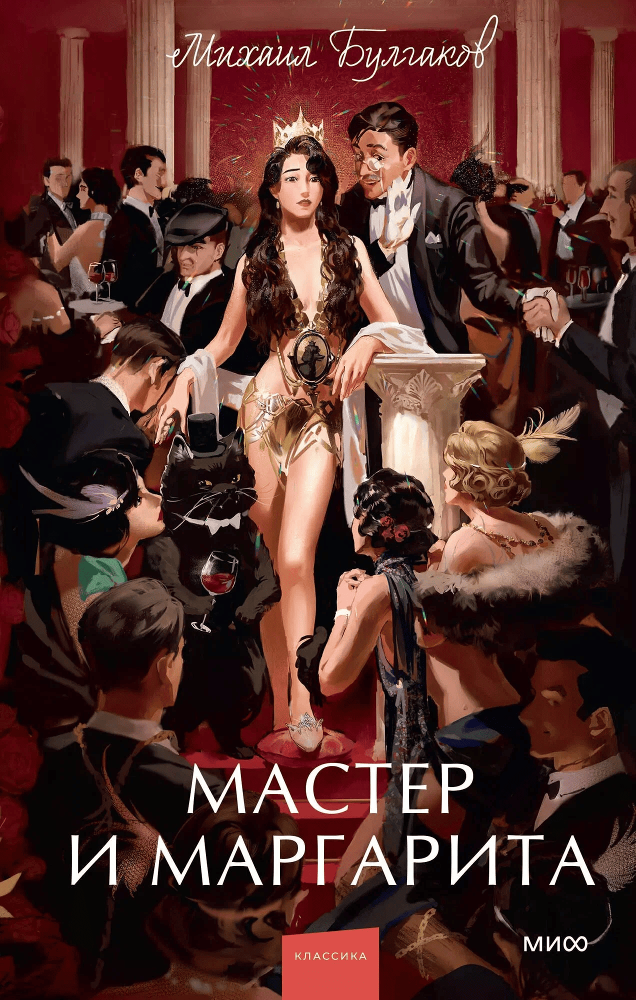

Мастер и Маргарита

Описание
Москвичи 1930-х годов и свита дьявола, прокуратор Иудеи Понтий Пилат и философ Иешуа Га-Ноцри, талантливый и сумасшедший мастер и его возлюбленная Маргарита, ставшая ведьмой. Сатира на советское общество, библейский сюжет, бал сатаны. Многоуровневый и многогранный роман Михаила Булгакова уже не одно десятилетие ставит перед читателями вопросы и заставляет иначе взглянуть на самих себя.
Характеристики
- Автор: Михаил Булгаков
- Год: 1967
- Количество страниц: 512
- Жанр: Русская классика
- Возрастные ограничения: 12+